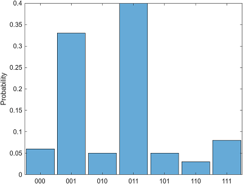
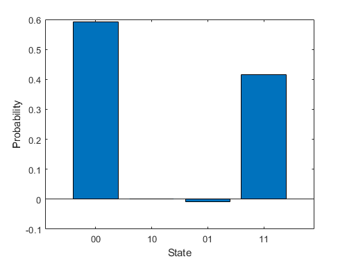

quantum.gate.QuantumMeasurement Class
Namespace: quantum.gate
Installation Required: This functionality requires MATLAB Support Package for Quantum Computing.
Description
A QuantumMeasurement object represents the measurement result of a
quantum circuit, either by running the circuit remotely on a quantum device or by simulating
the circuit locally with random sampling. This object contains information about the counts of
all measured states of the n qubits of the circuit.
Creation
Use
runto run a circuit remotely on a quantum device and fetch the finished task usingfetchOutputto return aQuantumMeasurementobject.Use
randsampleon aQuantumStateobject that represents the quantum state of the qubits of a circuit.randsamplerandomly samples this state locally (with a specified number of shots) and returns the measurement result as aQuantumMeasurementobject.
Properties
Methods
Examples
Create a quantum circuit that consists of three
x-axis rotation gates. The first gate acts on qubit 1 with rotation
angle pi/4, the second gate acts on qubit 2 with rotation angle
pi/2, and the third gate acts on qubit 3 with rotation angle
3*pi/4.
g = rxGate(1:3,pi/4*(1:3)); c = quantumCircuit(g);
Simulate this circuit using the default initial state, where all qubits are in the state. After running the circuit, randomly sample the quantum state with 100 shots and return the resulting simulated measurement.
s = simulate(c); m = randsample(s,100)
m =
QuantumMeasurement with properties:
MeasuredStates: [7×1 string]
Counts: [7×1 double]
Probabilities: [7×1 double]
NumQubits: 3Show the counts and estimated probabilities of the measured states.
table(m.Counts,m.Probabilities,m.MeasuredStates, ... VariableNames=["Counts","Probabilities","States"])
ans =
7×3 table
Counts Probabilities States
______ _____________ ______
6 0.06 "000"
33 0.33 "001"
5 0.05 "010"
40 0.4 "011"
5 0.05 "101"
3 0.03 "110"
8 0.08 "111" Plot the histogram of the measurement result to show each measured state and its estimated probability.
histogram(m)

You can also specify which qubits to plot in the histogram. The histogram shows the measured states of the specified qubits (where the other qubits can be in any state) and their corresponding probability distributions (where the probabilities of the other qubits being in any state are combined).
For example, specify qubits 1 and 3 to plot in the histogram. This histogram shows
the measured states , , , and , where their corresponding probabilities are 0.11,
0.73, 0.03, and 0.13.
histogram(m,[1 3])

Query each measured state and its estimated probability.
[states,probabilities] = querystates(m)
states =
7×1 string array
"000"
"001"
"010"
"011"
"101"
"110"
"111"
probabilities =
0.0600
0.3300
0.0500
0.4000
0.0500
0.0300
0.0800You can also specify which qubits to query when using
querystates.
[states,probabilities] = querystates(m,[1 3])
states =
4×1 string array
"00"
"01"
"10"
"11"
probabilities =
0.1100
0.7300
0.0300
0.1300Create a quantum circuit that consists of a Hadamard gate and a controlled X gate to entangle two qubits.
gates = [hGate(1); cxGate(1,2)]; c = quantumCircuit(gates);
Connect to a remote quantum device through AWS®. Create a task that runs the circuit on the device.
dev = quantum.backend.QuantumDeviceAWS("Lucy");
task = run(c,dev);Wait for the task to finish. Retrieve the result of running the circuit on the device.
wait(task) m = fetchOutput(task)
m =
QuantumMeasurement with properties:
MeasuredStates: [4×1 string]
Counts: [4×1 double]
Probabilities: [4×1 double]
NumQubits: 2Show the measurement result of running the circuit. Due to the noise in the physical quantum device, the and states can appear as measurements.
table(m.Counts,m.Probabilities,m.MeasuredStates, ... VariableNames=["Counts","Probabilities","States"])
ans =
4×3 table
Counts Probabilities States
______ _____________ ______
46 0.46 "00"
9 0.09 "10"
3 0.03 "01"
42 0.42 "11"
Create a quantum circuit that consists of a Hadamard gate and a controlled X gate to entangle two qubits.
gates = [hGate(1); cxGate(1,2)]; c = quantumCircuit(gates);
Connect to a remote quantum device through the IBM® Qiskit® Runtime Services. Create a task that runs the circuit on the device without error mitigation.
dev = quantum.backend.QuantumDeviceIBM("ibmq_qasm_simulator");
task = run(c,dev,NumShots=500,UseErrorMitigation=false);Wait for the task to finish. Retrieve the result of running the circuit on the device.
wait(task) m = fetchOutput(task)
m =
QuantumMeasurement with properties:
MeasuredStates: [4×1 string]
Counts: [4×1 double]
Probabilities: [4×1 double]
NumQubits: 2Show the measurement result of running the circuit. Due to the noise in the physical quantum device, the and states can appear as measurements.
table(m.Probabilities,m.MeasuredStates, ... VariableNames=["Probabilities","States"])
ans =
4×2 table
Probabilities States
_____________ ______
0.536 "00"
0.018 "10"
0.024 "01"
0.422 "11"
Next, create a task that runs the circuit on the same device by applying quantum error mitigation. The error mitigation is a collection of tools and methods to process measurement results that are aimed at reducing the effects of measurement errors.
task = run(c,dev,NumShots=500,UseErrorMitigation=true);
Wait for the task to finish. Retrieve the result of running the circuit on the device.
wait(task) m = fetchOutput(task)
m =
QuantumMeasurement with properties:
MeasuredStates: [4×1 string]
Counts: [4×1 double]
Probabilities: [4×1 double]
NumQubits: 2Show the measurement result of running the circuit with error mitigation. Here, the estimated probabilities of the and states are closer to 0.
table(m.Probabilities,m.MeasuredStates, ... VariableNames=["Probabilities","States"])
ans =
4×2 table
Probabilities States
_____________ ______
0.59254 "00"
0.001586 "10"
-0.0094173 "01"
0.4153 "11"
Plot this measurement result in a bar graph.
bar(m.States,m.Probabilities) xlabel("State") ylabel("Probability")

Version History
Introduced in R2023a